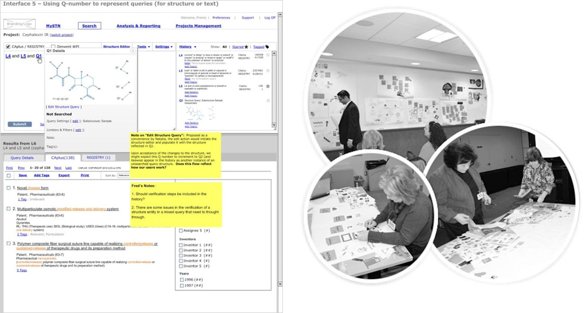
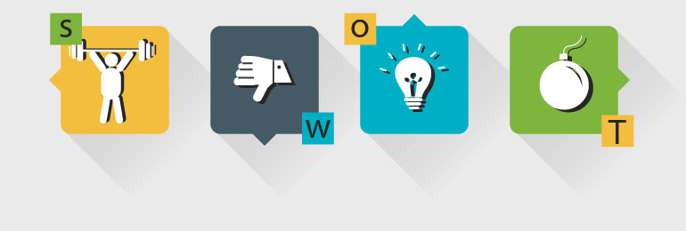
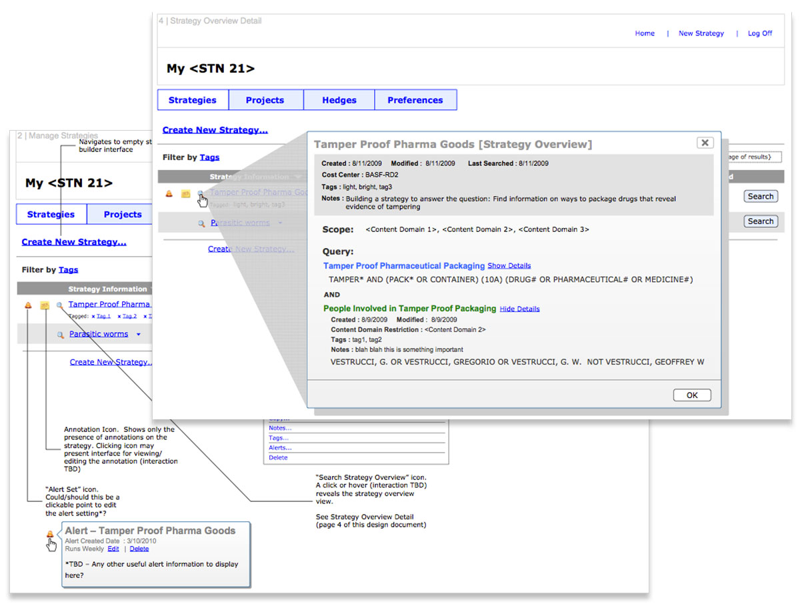

CAS is the one of the world's premier authority for chemical information. Providing integrated access to the most current and complete collection of global disclosed patent and non-patent, scientific and technical content, STN supports comprehensive retrieval to inform critical business decisions.
When I began working on the project in 2012, the UI was in need of an update and they were looking to finesse their search functionality which was the core feature of the product. The product goals were:
- Support core workflows
- Transition to a stateless environment
- Increase subscription
My contribution to the project
- Research and Task Analysis
- Information Architecture
- Interaction Design
- Usability Testing
- Heuristic Evaluation
User Research
I started off with conducting some user research, trying to get a deeper understanding of how our users use search. I conducted various usability workshops where I tested workflows with wireframes. Facilitated card- sorting exercises that helped evaluate the information architecture. This enabled me to quickly iterate and identify solutions that worked helped users acheieve their tasks efficiently and what could be better.
I also did SWOT analysis to identify the strengths and weaknesses of not only STN, but also our competitors, isolate threats and opportunities we could seize.
PERSONAS
Identified our key personas that helped guide find the answer to one of our most important questions “Who are we designing for?”. By understanding the expectations, concerns and motivations of our target users, it helped me to gain a perspective similar to the user and identify with the user and shape the product strategy. Once I had the personas identified, I collaborated with the team to:
- Prioritize them
- Gather acceptance from the stakeholders
CORE USER WORKFLOWS
From the research it was clear that we had to support these core stages in the workflow:
- Pre-search: Manage, Plan
- Search: Find, Assess, Analyze
- Post-Search: Organize, Evaluate, Share, Track
Design
Worked on an agile team, where we created user stories and iterated the design through implementation.
RESULT
The usability testing revealed that new and improved search design reduced the time taken to build a query by 60%.
“I would strongly agree that the application fits my needs because of the ease in which the searches are saved, tracked and the ability to re-use search strings. The functionality of this website is a vast improvement on the current STN system.”
"Latest update brings some long overdue features and nice touches. Good improvements.”